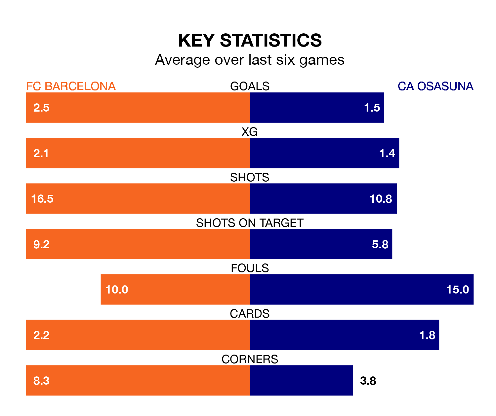

FC Barcelona host CA Osasuna in Wednesday's late match at Estadi Olímpic Lluís Companys looking to bounce back from defeat last time out in La Liga.
Barcelona, who sit fourth in the league after 21 games, fell to a 5-3 home defeat to Villarreal on Saturday.
They face an Osasuna side who secured a draw in their last match, a 1-1 tie with Sevilla, and who sit 12th in the table.
With 43 goals in 21 games so far this season, Barcelona are the league's third-highest scorers with 2.0 goals per game. But they are conceding more than average too, letting in 29 goals at a rate of 1.4 per game.
Osasuna, meanwhile, are below average scorers, with 1.2 goals per game, compared to a league average of 1.3. They have conceded 1.5 goals per game.
In the last 10 years, Barcelona and Osasuna have played each other on 13 occasions. Barcelona won 10 of them, Osasuna one, and they drew twice.
On average, Barcelona scored 3.0 goals and Osasuna 0.7 in those matches.
Their last meeting was on January 11, when Barcelona won 2-0 at home.
In Ante Budimir, the away side have one of the league's most on-form strikers so far this season. He has notched 10 goals in 21 appearances, to sit sixth in the scoring charts.
His goal rate of one every 157 minutes is quicker than that of Robert Lewandowski, Barça's top scorer with a goal every 188 minutes, and a total of eight goals in 19 games.
The hosts are in mixed form in La Liga, with three wins and a draw from their last six games.
With three wins and two draws over that period, Osasuna's form is slightly better – they have taken 11 points from 18, compared to Barcelona's 10.
Updated: 13:20 (UTC), 29/01/24